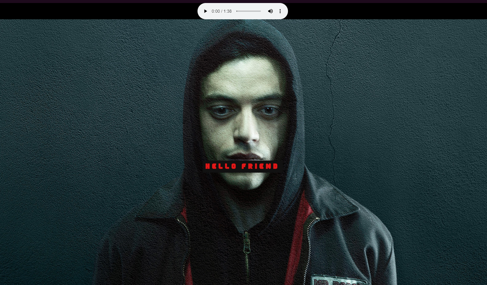

Hi, my name is Tony, and I'm a web developer
Here are my current projects!
A basic site with Parallax images honoring the greatest TV Show that has ever been made.
 Project's Github RepositoryAn Image Gallery honoring a very special guy as well as showing off basic Media Queries
 Project's Github Repository
Project's Github Repository
The man behind the code
I was born in Bergen, Norway in 1999. I am a man of many hobbies, passions, and skill sets.
Some examples include Coding, TV and Movies, Video Games, Reading, Cooking, Exercising, and Music.
I'm a big advocate for human rights, equality, and mental health. I love animals, all of them.
I care more about my pets than I care about many, many people.
At the moment I work primarily with front end design, using HTML, CSS, and JavaScript.
In the future I will branch out in order to gain further experience, so I can be the best coder I can be.